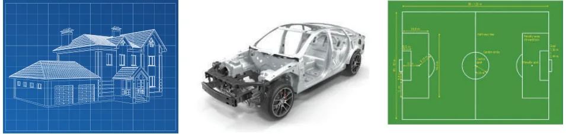
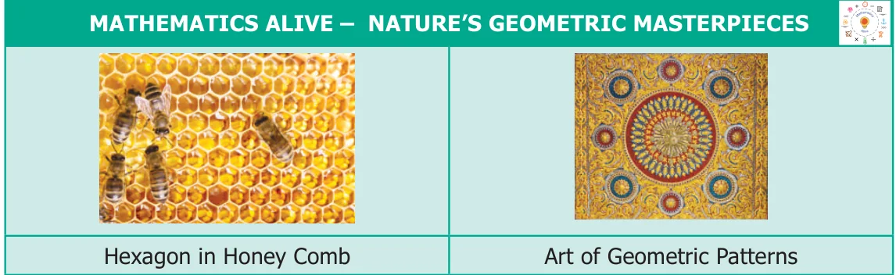
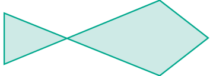
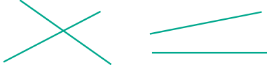
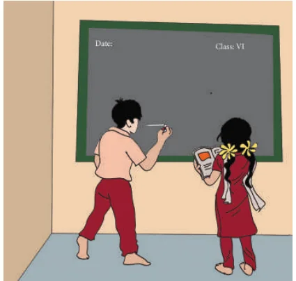

<!DOCTYPE html>
<html lang="en">
<head>
<meta charset="UTF-8">
<meta name="viewport" content="width=device-width,initial-scale=1">
<title>4.1 Introduction — Geometry</title>
<meta name="description" content="Class 6 Mathematics · Term 1 · Geometry · 4.1 Introduction">
<link rel="icon" href="data:image/svg+xml,<svg xmlns='http://www.w3.org/2000/svg' viewBox='0 0 100 100'><text y='.9em' font-size='90'>📘</text></svg>">
<link rel="stylesheet" href="../../../assets/book.css">
<link rel="stylesheet" href="https://cdn.jsdelivr.net/npm/katex@0.16.11/dist/katex.min.css" crossorigin="anonymous">
</head>
<body>
<header class="topbar">
<div class="topbar-in">
  <div class="crumb">
    <span class="c1"><a href="../../../index.html">Library</a> · <a href="../../index.html">Class 6 Mathematics · Term 1</a></span>
    <span class="c2">Geometry · 4.1 Introduction</span>
  </div>
  <a class="tb-btn" data-nav="prev" href="../../03-ratio-proportion/13-ict-corner/index.html" title="ICT Corner">←</a>
  <details class="drawer"><summary class="tb-btn" title="Sections in this chapter">☰</summary>
<div class="drawer-panel"><div class="dh">Geometry</div><a href="../01-introduction-4.1/index.html" aria-current="page">4.1 Introduction</a><a href="../02-describing-lines-4.2/index.html">4.2 Describing lines</a><a href="../03-exercise-4.1/index.html">Exercise 4.1</a><a href="../04-angles-4.3/index.html">4.3 Angles</a><a href="../05-exercise-4.2/index.html">Exercise 4.2</a><a href="../06-points-and-lines-4.4/index.html">4.4 Points and lines</a><a href="../07-exercise-4.3/index.html">Exercise 4.3</a><a href="../08-exercise-4.4/index.html">Exercise 4.4; Miscellaneous Practice Problems</a><a href="../09-challenging-problems/index.html">Challenging Problems</a><a href="../10-summary/index.html">Summary</a><a href="../11-ict-corner/index.html">ICT Corner</a></div></details>
  <a class="tb-btn" data-nav="next" href="../../04-geometry/02-describing-lines-4.2/index.html" title="4.2 Describing lines">→</a>
  <button class="tb-btn" data-theme-toggle title="Toggle light / dark" aria-label="Toggle light or dark theme">◐</button>
</div>
<div class="progress"><span style="width:58.9%"></span></div>
</header>
<main class="wrap">
<div class="sec-head">
  <p class="eyebrow"><a href="../index.html">Chapter 4 · Geometry</a></p>
  <h1>4.1 Introduction</h1>
  <p class="sec-meta">Textbook pages 1–3 · 8 figures</p>
</div>
<article class="prose">
<p>ChapterChapter</p>
<h2 id="s-4">4</h2>
<h2 id="s-geometrygeometry">GEOMETRYGEOMETRY</h2>
<h2 id="s-learning-objectives">Learning Objectives</h2>
<ul class="qlist">
<li><span class="mk">●</span><span class="lt">To know about lines, line segments and rays.</span></li>
<li><span class="mk">●</span><span class="lt">To know angles and its types.</span></li>
<li><span class="mk">●</span><span class="lt">To know the usage of ruler and protractor.</span></li>
<li><span class="mk">●</span><span class="lt">To identify parallel and intersecting lines.</span></li>
<li><span class="mk">●</span><span class="lt">To identify pairs of complementary and supplementary angles.</span></li>
<li><span class="mk">●</span><span class="lt">To know collinear points and point of concurrency.</span></li>
</ul>
<figure class="fig wide"></figure>
<p>Geometry means the measurement of the earth. It includes the study of the properties of shapes and its measures. In ancient days, geometry was developed for the practical purpose of construction, surveying and various crafts.</p>
<p>Nature evolves out of simple geometrical shapes and patterns from tiny atoms to huge galaxies. The objects that you see in your environment have an impact of geometrical ideas. An appealing appearance of houses and buildings are made possible by geometrical thinking. Vehicles like cycle, car, bus are designed using geometrical concepts. The toys that you play with, the tools like pencil, scale and book that you use with, give rise to geometrical ideas and shapes. In this chapter, we will learn about the geometrical concepts such as lines, line segments, rays and angles.</p>
<figure class="fig table-fig wide"></figure>
<h3 id="s-4-1-1-fun-with-lines">4.1.1 Fun with lines</h3>
<p>What shapes can you draw with 3 lines or 4 lines or 5 lines? We have already seen some shapes with names like triangles, rectangles and squares.</p>
<figure class="fig"><figcaption>Fig. 4.1</figcaption></figure>
<p>Here is a shape which is in the form of a fish (see Fig. 4.1). It has 5 lines. Can you draw a fish with 4 lines or with 3 lines? Think!</p>
<h3 id="s-4-1-2-only-two-lines">4.1.2 Only two lines</h3>
<p>What shapes can you draw with only TWO lines? The following forms are possible with 2 lines. Isn’t it?</p>
<figure class="fig"></figure>
<figure class="fig"><figcaption>Fig. 4.2</figcaption></figure>
<p>Is there something you notice in all these shapes?</p>
<h3 id="s-4-1-3-only-one-line">4.1.3 Only one line</h3>
<p>What shapes can be drawn with only ONE line? The line may be standing upright, lying flat, or slanting. Perhaps it can be, slant left or slant right. It may be long or short. Now, consider the following situation. The teacher gives Yazhini a paper with a line drawn on it and asks Akilan to draw the same line on the black board, as instructed</p>
<figure class="fig"></figure>
<figure class="fig side-fig"></figure>
<p>by Yazhini. Then they shall reverse the process. They do the same with other shapes using 2 lines and 3 lines. Try doing this and say, whether this is easy to do! Observe the following conversation. Teacher : Sakthi, can you say how to draw lines? Sakthi : Yes Teacher! Why only lines? I may like to</p>
<p>draw curves and circles too!</p>
<p>Teacher : Sakthi, you can draw all the shapes you like. But you see, there is enough</p>
<p>difficulty in describing shapes made only of lines. So, we will get to curves and circles later.</p>
<p>Sakthi : Teacher, Why should we describe shapes? We can just draw and show them</p>
<p>when we want. Is Sakthi right?</p>
<p>In Mathematics, every thinking is interesting and unlimited. Remember numbers; it is not stopped with adding 2 digits. Numbers go on endlessly and it is possible to add any two numbers, however large. We know that even a 37 digit number ending with 0 is divisible by 5. It is the same with shapes too. We are interested in lines, triangles, rectangles</p>
<figure class="fig"></figure>
<p>and in whatever the shapes may be and the size however large or small. We need to give them names not only to describe them but also to explore a lot with them.</p>
</article>
<nav class="pager"><a class="" data-nav="prev" href="../../03-ratio-proportion/13-ict-corner/index.html"><span class="dir">← Previous</span><span class="t">ICT Corner</span><span class="ch">Ratio Proportion</span></a><a class="nx" data-nav="next" href="../../04-geometry/02-describing-lines-4.2/index.html"><span class="dir">Next →</span><span class="t">4.2 Describing lines</span><span class="ch">Geometry</span></a></nav>
</main><footer class="site">Generated from the source textbook PDFs · text, figures and exercises belong to their respective publishers.</footer><script defer src="https://cdn.jsdelivr.net/npm/katex@0.16.11/dist/katex.min.js" crossorigin="anonymous"></script>
<script defer src="https://cdn.jsdelivr.net/npm/katex@0.16.11/dist/contrib/auto-render.min.js" crossorigin="anonymous"
  onload="renderMathInElement(document.body,{delimiters:[
    {left:'\\(',right:'\\)',display:false},
    {left:'$$',right:'$$',display:true},
    {left:'\\[',right:'\\]',display:true}],throwOnError:false,ignoredTags:['script','noscript','style','textarea','pre','code']})"></script>
<script src="../../../assets/book.js"></script>
<script defer src="../../../../assets/search.js?v=1789782769"></script>
<script defer src="../../../../assets/screenshot.js?v=1789782769"></script>
</body>
</html>
